전자기사 (2006-03-05 기출문제)
1과목: 전기자기학
1. 길이 l[m], 단면적의 지름 d[m]인 원통이 길이 방향으로 균일하게 자화되어 자화의 세기가 J[Wb/m2]인 경우 원통 양단에서의 전 자극의 세기는 몇 Wb 인가?
- πd2J
- πdJ
- 4J/πd2
- πd2J/4
(정답률: 알수없음)

2. 전자파의 특성에 대한 설명으로 틀린 것은?
- 전파 Ex를 특성 임피던스로 나누면 자파 Hy가 된다.
- 매질이 도전성을 갖지 않으면 전파 Ex와 자파 Hy는 동위상이 된다.
- 전파 Ex와 자파 Hy의 진동방향은 진행 방향에 수평인 종파이다.
- 전자파의 속도는 주파수와 무관하다.
(정답률: 알수없음)
3. 평등자계를 얻는 방법으로 가장 알맞은 것은?
- 길이에 비하여 단면적이 충분히 큰 솔레노이드에 전류를 흘린다.
- 단면적에 비하여 길이가 충분히 긴 솔레노이드에 전류를 흘린다.
- 단면적에 비하여 길이가 충분히 긴 원통형 도선에 전류를 흘린다.
- 길이에 비하여 단면적이 충분히 큰 원통형 도선에 전류를 흘린다.
(정답률: 알수없음)
4. 간격 3m의 평행 무한평면도체에 각각 ±4C/m2의 전하를 주었을 때, 두 도체간의 전위차는 약 몇 V인가?
- 1.5×1011
- 1.5×1012
- 1.36×1011
- 1.36×1012
(정답률: 알수없음)
5. 점전하 0.5C이 전계 E = 3ax + 5ay + 8az [V/m] 중에서 속도 4ax + 2ay + 3az 로 이동할 때 받는 힘은 몇 N인가?
- 4.95
- 7.45
- 9.95
- 13.47
(정답률: 알수없음)
6. 도전률이 5.8×107 ℧/m, 비투자율이 1인 구리에 60㎐ 주파수를 갖는 전류가 흐를 때, 표피 두께는 몇 mm 인가?
- 8.53
- 9.78
- 11.28
- 13.03
(정답률: 알수없음)
7. 전선에 흐르는 전류를 1.5배 증가시켜도 저항에 의한 전압 강하가 변하지 않으려면 전선의 반지름을 약 몇 배로 하여야 하는가?
- 0.67
- 0.82
- 1.22
- 3
(정답률: 알수없음)
8. 그림과 같은 1m 당 권선수 n, 반지름 a[m] 의 무한장 솔레노이드에서 자기인덕턴스는 n과 a사이에 어떤 관계가 있는가?
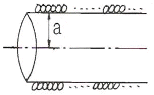
- a와는 상관없고 n2 에 비례한다.
- a와 n의 곱에 비례한다.
- a2 과 n2 의 곱에 비례한다.
- a2 에 반비례하고 n2 에 비례한다.
(정답률: 알수없음)
9. 자기모멘트 9.8×10-5 Wbㆍm의 막대자석을 지구자계의 수평성분 10.5 AT/m 의 곳에서 지자기 자오면으로부터 90° 회전시키는데 필요한 일은 몇 J인가?
- 9.3×10-5
- 9.3×10-3
- 1.03×10-5
- 1.03×10-3
(정답률: 알수없음)
10. 전기력선에 관한 다음 설명 중 틀린 것은?
- 전기력선은 도체 표면에 수직으로 출입한다.
- 도체 내부에는 전기력선이 다수 존재한다.
- 단위전하에서는 진공 중에서 1/ε0개의 전기력선이 출입한다.
- 전기력선은 전계가 0 이 아닌 곳에서는 등전위면과 직교한다.
(정답률: 알수없음)
11. 다음 중 거리 r에 반비례하는 것은?
- 무한장 직선전하에 의한 전계
- 구도체 전하에 의한 전계
- 전기쌍극자에 의한 전계
- 전기쌍극자에 의한 전위
(정답률: 알수없음)
12. 그림과 같이 반지름 a인 무한길이 직선도선에 I인 전류가 도선 단면에 균일하게 흐르고 있다. 이 때 축으로부터 r (a＞r)인 거리에 있는 도선 내부의 점 P의 자계의 세기에 관한 설명으로 옳은 것은?
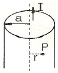
- r 에 비례한다.
- r 에 반비례한다.
- r2 에 반비례한다.
- r 에 관계없이 항상 0 이다.
(정답률: 알수없음)
13. 전계 E[V/m], 전속밀도 D[C/m2], 유전률 ε[F/m]인 유전체 내에 저장되는 에너지 밀도는 몇 J/m3 인가?
- ED
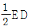
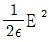
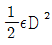
(정답률: 알수없음)
14. x ＞ 0 인 영역에 ε1 = 3인 유전체, x ＜ 0 인 영역에서 ε2 = 5 인 유전체가 있다. 유전률 ε2 인 영역에서 전계 E2 = 20ax + 30ay + 40az [V/m]일 때, 유전률 ε1 인 영역에서의 전계 E1 은 몇 V/m 인가?
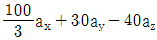
- 20ax + 90ay - 40az
- 100ax + 10ay - 40az
- 60ax + 30ay - 40az
(정답률: 알수없음)
15. 유전률 ε[F/m], 고유저항 ρ[Ωㆍm]인 유전체로 채운 정전용량 C[F]의 콘덴서에 전압 V[V]를 가할 때, 유전체중의 t초 동안에 발생하는 열량은 몇 cal 인가?
- 4.2×CV2t/ρε
- 4.2×CVt/ρε
- 0.244.2×CV2t/ρε
- 0.24×CVt/ρε
(정답률: 알수없음)
16. 자속의 연속성을 나타낸 식은?
- div B = ρ
- div B = 0
- B = μH
- div B = μH
(정답률: 알수없음)
17. 전계 E = i2e3xsin 5y - je3xcos 5y + k3ze4z 일 때, 점 (x = 0, y = 0, z = 0)에서의 발산은?
- 0
- 3
- 6
- 10
(정답률: 알수없음)
18. 내원통의 반지름 a, 외원통의 반지름 b 인 동축원통 콘덴서의 내외 원통사이에 공기를 넣었을 때 정전용량이 C0 이었다. 내외 반지름을 모두 3배로 하고 공기대신 비유전률 9인 유전체를 넣었을 경우의 정전용량은?
- C0/9
- C0/3
- C0
- 9C0
(정답률: 알수없음)
19. C1, C2 의 두 폐회로간의 상호인덕턴스를 구하는 노이만의 공식은?
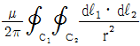
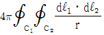
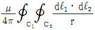
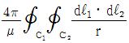
(정답률: 알수없음)
20. 반지름 a 인 접지 구도체의 중심에서 d( ＞ a )되는 점에 점전하 Q가 있을 때 영상전하 Q'의 크기는?
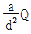
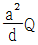
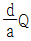
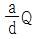
(정답률: 알수없음)
2과목: 회로이론
21. 분포 정수 회로에서 회로 정수 사이에는 어떤 관계가 있는가?
- AD-CD=1
- AD-BC=1
- AD+BC=1
- AB+CD=1
(정답률: 알수없음)
22. 분류기를 사용하여 전류를 측정하는 경우 전류계의 내부저항이 0.1[Ω], 분류기의 저항이 0.01[Ω]이면 그 배율은?
- 4
- 10
- 11
- 14
(정답률: 알수없음)
23. Δ 결선되 부하를 Y 결선으로 바꾸면 소비전력은 어떻게 되는가? (단, 선간 전압은 일정하다.)
- 9배
- 1/9배
- 3배
- 1/3배
(정답률: 알수없음)
24. 그림과 같은 회로에서 스위치를 닫은 후 회로에ㅐ 흐르는 전류 I(t)의 시정수는?
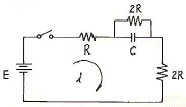
- 2RC
- 5RC
- 1/5CR
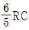
(정답률: 알수없음)
25. RLC 병렬회로가 공진 주파수보다 큰 주파수 영역에서 동작 할때, 이 회로는?
- 유도성 회로가 된다.
- 용량성 회로가 된다.
- 저항성 회로가 된다.
- 탱크 회로가 된다.
(정답률: 알수없음)
26. RL 병렬회로에서, 일정하게 인가된 정현파 전류의 위상 θ에 대하여 저항에 흐르는 전류 위상 θ1 과 인덕터에 흐르는 전류 위상 θ2을 나타낸 것으로 올바른 것은?
- θ ＜ θ1 ＜ θ2
- θ2 ＜ θ1 ＜ θ
- θ2 ＜ θ ＜ θ1
- θ1 ＜ θ ＜ θ2
(정답률: 알수없음)
27. 2단자 임피던스가 S + 3/S2 + 3S + 2일 때 극점(pole)은?
- -3
- 0
- -1, -2, -3
- -1, -2
(정답률: 알수없음)
28. 정현파 전압의 진폭이 Vm 이라면 이를 반파 정류 했을 때의 평균값은?
- Vm/2
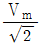
- Vm/π
- 2Vm/π
(정답률: 알수없음)
29. 무한장 전송 선로의 특성 임피던스 Z0 는? (단, R, L, G, C 는 각 각 단위 길이당의 저항, 인덕턴스, 컨덕턴스, 캐패시턴스이다.)
- Z0 = (R+jωL)(G+jωC)
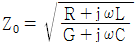
- Z0 = R+jωL/G+jωC
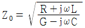
(정답률: 알수없음)
30. 다음 회로의 어드미턴스 파라미터 Y11 은 얼마인가?
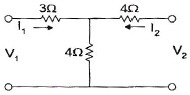
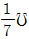
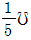
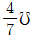
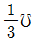
(정답률: 알수없음)
31. RC 저역 필터회로에서 ω = 1/RC일 때 위상각은?
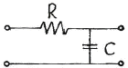
- 0°
- +45°
- -45°
- +90°
(정답률: 알수없음)
32. R-L 직렬회로에 v(t) = 100sin(104t + Q1) [V]의 전압을 가할 때 i(t) = 20sin(104t + Q2) [A]의 전류가 흘렀다. R = 30[Ω] 일 때 인덕턴스 L의 값은?
- L = 4[mH]
- L = 40[mH]
- L = 0.4[mH]
- L = 0.04[mH]
(정답률: 알수없음)
33. 그림의 교류 회로에서 R에 전류가 흐르지 않기 위한 조건은?
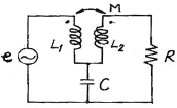
- ωL1 = 1/ωC
- ωL2 = 1/ωC
- ωM = 1/ωC
- ωM = ωL2
(정답률: 알수없음)
34. I1 = 2 + j3, I2 = i + j [A] 일 때 합성 전류의 크기 I[A]는?
- 5
- 4
- 3
- 2
(정답률: 알수없음)
35. ABCD 파라미터에서 단락 역방향 전달 임피던스는?
- A
- B
- C
- D
(정답률: 알수없음)
36. 다음 회로의 합성 캐패시턴스는?
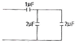
- 4μF
- 0.8μF
- 0.5μF
- 5μF
(정답률: 알수없음)
37. 단위계단함수의 라플라스 변환은?
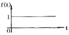
- 1
- S
- 1/S
- 1/S-1
(정답률: 알수없음)
38. 그림과 같은 4단자 회로망에서 4단자 정수를 나타낼 때 A값은? (단. A는 개방 역방향 전압 이득임.)
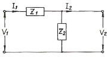
- Z1
- 1
- 1/Z2
- 1+Z1/Z2
(정답률: 알수없음)
39. 전송선로의 특성 임피던스가 50[Ω]이고, 부하 저항이 150[Ω]이면 부하에서의 반사계수는?
- 0
- 0.5
- 0.3
- 1
(정답률: 알수없음)
40. 그림과 같은 파형은 Laplace 변환은?
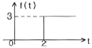
- 3
- 3/S
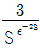
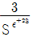
(정답률: 알수없음)
3과목: 전자회로
41. 궤환 발진기에서 바크하우젠(Bark hausen)의 발진 조건을 표시한 것 중 옳은 것은?
- βA = 0
- βA ＜ 1
- -βA = 1
- βA ＞ 1
(정답률: 알수없음)
42. 다음 NAND 게이트로 구성된 논리회로는?
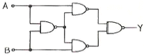
- NOR
- HALF - ADDER
- EXCLUSIVE - OR
- EXCESS - 3 ADDER
(정답률: 알수없음)
43. 변조도 80[%]인 진폭 변조에서 반송파의 평균 출력이 300[mW]일 때 피변조 반송파의 평균 출력은?
- 120[mW]
- 240[mW]
- 396[mW]
- 420[mW]
(정답률: 알수없음)
44. PNP트랜지스터의 베이스에 대한 설명 중 옳지 않은 것은?
- 베이스의 폭은 정공의 확산 길이보다 훨씬 짧다.
- 재결합이 잘 되도록 하기 위하여 불순물 밀도를 높게 한다.
- 베이스의 폭은 좁고, 불순물 밀도는 적게 한다.
- 베이스 영역의 소수케리어는 정공이다.
(정답률: 알수없음)
45. 10112 를 Gray Code로 변환하면?
- 1111
- 1110
- 1010
- 1011
(정답률: 알수없음)
46. 그림과 같은 회로의 명칭은? (단, FF :flip-flop)
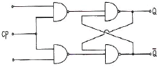
- J-K FF
- R-S FF
- T FF
- D FF
(정답률: 알수없음)
47. 비안정 멀티바이브레이터 회로에서 베이스 전압의 파형은?
- 구형파
- 정현파
- 삼각파
- 스텝파
(정답률: 알수없음)
48. 그림과 같은 동조증폭기에서 코일의 큐를 QC, 부하만의 큐를 QL이라 할 때 이 증폭기 전체의 선택도 Q는 어떤 관계식이 되는가? (단, QC = ω0L/r, QL = RLω0C 이며, hoe 는 거의 0 이다.)
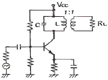
- Q = QC + QL
- Q = 1/QC + 1/QL
- Q = QC/QL
- Q = QCQL/QC + QL
(정답률: 알수없음)
49. 다음 그림과 같은 이득이 AV 인 연산 증폭회로에서 출력 전압 V0 를 나타내는 것은? (단, V1, V2 및 V3 는 입력 신호 전압이다.)
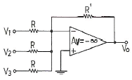
- V0 = R/R'(V1 + V2 + V3)
- V0 = R/3R'(V1 + V2 + V3)
- V0 = R'/R(V1 + V2 + V3)
- V0 = -R'/R(V1 + V2 + V3)
(정답률: 알수없음)
50. 다음 그림과 같은 논리회로의 출력은?
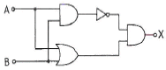
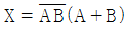
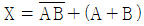
- X = AB + AB
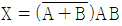
(정답률: 알수없음)
51. 다음 회로에서 VCE = 6.5 [V]가 되기 위한 Rb 값으로 가장 적당한 것은? (단, 여기서 VBE = 0.7[V], β = 100 이다.)
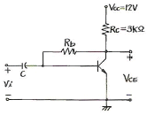
- 약 129[kΩ]
- 약 275[kΩ]
- 약 320[kΩ]
- 약 421[kΩ]
(정답률: 알수없음)
52. 발진 회로에 사용하는 수정편의 등가회로는 그림과 같고, 각 파라미터는 그림에 표시한 값을 갖는다. 이 수정편의 “Q"를 계산하면?
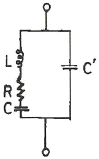
- 410
- 589
- 1277
- 2317
(정답률: 알수없음)
53. 포토 커플러(photo coupler)란?
- 태양 전지의 일종이다.
- 빛을 전기로 변환하는 장치이다.
- 전기를 빛으로 변환하는 장치이다.
- 발광소자와 수광소자를 하나로 조합한 장치이다.
(정답률: 알수없음)
54. 그림과 같은 h정수를 쓴 이미터 접지회로 모델에서 이미터, 베이스 사이의 전압 Vbe 는?
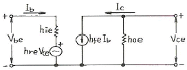
- hfeIb + hoeVce
- hieIb + hreVce
- hreIb + hieVce
- hoeIb + hfeVce
(정답률: 알수없음)
55. PN접합 다이오드의 온도와 역포화 전류와의 관계를 올바르게 나타낸 것은?
- 역포화 전류는 온도가 10[°C] 증가함에 따라 직선적으로 감소한다.
- 역포화 전류는 온도에 관계없이 항상 일정하다.
- 역포화 전류는 온도가 10[°C] 증가함에 따라 직선적으로 증가한다.
- 온도가 10[°C] 증가할 때마다 역포화 전류는 약 2배씩 증가한다.
(정답률: 알수없음)
56. 주어진 회로는 어떤 종류의 발진기인가?
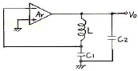
- colpitts 발진기
- hartley 발진기
- wien bridge 발진기
- phase-shift 발진기
(정답률: 알수없음)
57. 수정발진기에서 안정된 발진을 유지할 수 있는 주파수 범위는? (단, fs : 수정자체의 직렬공진 주파수, fp : 전극용량을 포함한 병렬공진 주파수)
- fs ＜ f ＜ fp
- f ＞ fs ＞ fp
- f ＜ fs ＜ fp
- fs ＞ f ＞ fp
(정답률: 알수없음)
58. 다음 회로에서 A = C = 8Volts, B = 0Volts 일 때 출력 전압 VO 는?
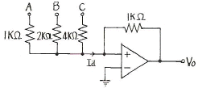
- -4[V]
- -5[V]
- -8[V]
- -10[V]
(정답률: 알수없음)
59. 다음 회로 Qn = 0 인 상태에서 S = 1, R = 0이 가해지면 그 직후의 출력은?
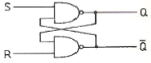
- Q = 1,

- Q = 0,

- Q = 1,

- Q = 0,

(정답률: 알수없음)
60. 다음 회로는 연산증폭기를 사용한 윈 브리지 발진회로를 나타내고 있다. 발진주파수는?
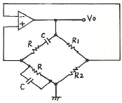
- 1/2πRC
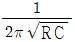
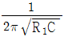
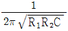
(정답률: 알수없음)
4과목: 물리전자공학
61. 열평형 상태에서 pn 접합 전류가 0 이라면, 그 의미는?
- 전위장벽이 없어졌다.
- 접합을 흐르는 다수 캐리어가 없다.
- 접합을 흐르는 소수 캐리어가 없다.
- 접합을 흐르는 소수 캐리어와 다수 캐리어가 같다.
(정답률: 알수없음)
62. 캐리어의 확산 길이는?
- 캐리어의 이동도에만 의존한다.
- 캐리어의 수명 시간에만 의존한다.
- 캐리어의 확산 계수에만 의존한다.
- 캐리어의 확산 계수와 수명 시간에 따라 변한다.
(정답률: 알수없음)
63. pn 접합에 역바이어스 전압을 걸어주면 어떠한 현상이 일어나는 가?
- 이온화가 증가한다.
- 접합면의 정전용량이 증가한다.
- 접합면의 장벽 전위가 낮아진다.
- 접합면의 공간 전하용량이 증가한다.
(정답률: 알수없음)
64. 전계에 의한 전자 또는 정공의 흐름에 의한 전류는?
- 확산 전류
- 드리프트 전류
- 차단 전류
- 포화 전류
(정답률: 알수없음)
65. 500[V] 전압으로 가속된 전자의 속도는 10[V]의 전압으로 가속된 전자 속도의 몇 배인가?
- 50
(정답률: 알수없음)
66. Hall 계수에 의해서 구할 수 있는 사항을 가장 잘 표현한 것은?
- 캐리어의 종류만을 구할 수 있다.
- 캐리어 농도와 도전율을 알 수 있다.
- 캐리어 종류와 도전율을 구할 수 있다.
- 캐리어의 종류, 농도는 물론 도전율을 알 경우 이동도도 구할 수 있다.
(정답률: 알수없음)
67. PN 접합의 역전압 의존성을 이용한 소자는?
- Tunnel 다이오드
- Zener 다이오드
- Varistor
- Varactor 다이오드
(정답률: 알수없음)
68. 트랜지스터의 고주파 특성으로서 차단 주파수 α는 무엇으로 결정되는가?
- 컬렉터에 걸어주는 전압
- 이미터에 걸어주는 전압에 비례하고, 컬렉터 용량에 반비례한다.
- 베이스 폭의 자승에 반비례하고, 확산계수에 비례한다.
- 베이스 폭에 비례하고, 컬렉터 용량에 반비례한다.
(정답률: 알수없음)
69. 반도체의 전자와 정공에 대한 설명 중 옳지 않은 것은?
- 전자가 공유결합을 이탈하면 정공이 생성된다.
- 전자의 흐름과 정공의 흐름은 반대이다.
- 전자와 정공이 결합하면 에너지를 흡수한다.
- 자유전자는 정공보다 이동도가 더 크다.
(정답률: 알수없음)
70. FET가 초퍼(Chopper)로서 적합한 이유는?
- 전력 소모가 적다.
- 대량 생산에 적합하다.
- 입력 임피던스가 매우 높다.
- 오프 셋(off set) 전압이 매우 작다.
(정답률: 알수없음)
71. 열저자 방출에서 전자류가 온도 제한 영역에 있어서도 플레이트 전위의 상승에 의해 더욱 증가하는 현상은?
- 쇼트키 효과
- 펠티어 효과
- 지벡 효과
- 홀 효과
(정답률: 알수없음)
72. 균등 전계내의 전자의 운동에 관한 설명 중 옳지 않은 것은?
- 전자는 전계와 반대 방향의 일정한 힘을 받는다.
- 전자의 운동 속도는 인가된 전위차 V의 제곱근에 반비례 한다.
- 전계 E에 의한 전자의 운동 에너지는
 [J]이다.
[J]이다. - 전위차 V에 의한 가속전자의 운동 에너지는 eV[J]이다.
(정답률: 알수없음)
73. 전류 제어용 소자는?
- 3극 진공관
- 접합 트랜지스터
- 접합 전계효과 트랜지스터
- 절연 게이트 전계효과 트랜지스터
(정답률: 알수없음)
74. 0℃, 1기압(atm)에 대한 기체 분자 밀도는 약 얼마인가? (단, 볼츠만 상수 K = 1.38×10-23 [J/K] 이다.)
- 2.69×1025[m-3]
- 7.2×1025[m-3]
- 5.45×1020[m-3]
- 11.4×1022[m-3]
(정답률: 알수없음)
75. 트랜지스터의 동작 특성에 대해서 옳은 것은?
- 컬렉터는 베이스 영역보다 불순물 농도가 높다.
- 베이스 영역은 N형 반도체이어야 한다.
- 베이스 영역은 소수캐리어의 확산거리에 비해서 좁아야 한다.
- 컬렉터 접합은 순바이어스 되어야 한다.
(정답률: 알수없음)
76. n채널 J-FET와 그 특성이 비슷한 진공관은?
- 2극관
- 3극관
- 4극관
- 5극관
(정답률: 알수없음)
77. 접합 트랜지스터에서 주입된 과잉 소수 캐리어는 베이스영역을 어떤 방법에 의해서 흐르는가?
- 확산에 의해서
- 드리프트에 의해서
- 컬렉터 접합에 가한 바이어스 전압에 의해서
- 이미터 접합에 가한 바이어스 전압에 의해서
(정답률: 알수없음)
78. 전자 방출에 관한 설명 중 옳지 않은 것은?
- 금속을 고온으로 가열하면 자유전자의 일부가 금속 외부로 방출되는 현상을 열전자 방출이라 한다.
- 금속의 표면에 빛을 입사시키면 전자가 방출되는 현상을 광전자 방출이라 한다.
- 금속의 표면에 강한 전계를 가하면 전자가 방출되는 현상을 2차 전자 방출이라 한다.
- 금속의 표면에 전계를 가하면 금속 표면의 열전자 방출량 보다 전자 방출이 증가하는 현상을 Shottky 효과라 한다.
(정답률: 알수없음)
79. 전계의 세기 E = 105 [V/m] 의 평등 전계 중에 놓인 전자에 가해지는 전자의 가속도는 약 얼마인가?
- 1600 [m/s2]
- 1.602×10-14[m2]
- 5.93×105[m2]
- 1.75×1016[m2]
(정답률: 알수없음)
80. 쉬뢰딩거(Schrodinger) 방정식에 관한 설명으로 잘못된 것은?
- 전자의 위치 에너지가 0이라도 적용할 수 있다.
- 전자의 위치를 정확히 구할 수 있다.
- 깊은 전위장벽의 상자에 싸여 있는 전자의 에너지는 양자화된다.
- 깊은 전위장벽의 상자에 싸여 있는 전자에 대한 전자파는 정재파이다.
(정답률: 알수없음)
5과목: 전자계산기일반
81. 프로그램 카운터가 명령어의 번지와 더해져서 유효번지를 결정하는 어드레싱 모드는?
- 레지스터 모드
- 간접번지 모드
- 상대번지 모드
- 인덱스 어드레싱 모드
(정답률: 알수없음)
82. 다음 중 순차 논리회로가 아닌 것은?
- 전가산기(Full Adder)
- Master-Slave 방식의 JK 플립플롭
- 8진 UP 카운터(Counter)
- 4비트 시프트 레지스터
(정답률: 알수없음)
83. 인터럽트를 발생하는 모든 장치들을 인터럽트의 우선 순위에 따라서 직렬로 연결하여 인터럽트의 우선순위를 처리하는 방법은?
- Handshaking 방식
- Daisy-Chain 방식
- 우선순위 인코더 방식
- 병렬 우선순위 인터럽트
(정답률: 알수없음)
84. 다음 명령어의 형식에 대한 설명 중 옳지 않은 것은?
- 3-주소 명령어 형식은 세 개의 자료 필드를 갖고 있다.
- 2-주소 명령어 형식에서는 연산 후에도 원래 입력 자료가 항상 보존된다.
- 1-주소 명령어 형식에서는 연산 결과가 항상 누산기 (accumulator)에 기억된다.
- 0-주소 명령어 형식을 사용하는 컴퓨터는 일반적으로 스택(stack)을 갖고 있다.
(정답률: 알수없음)
85. 다음 주소 지정 방식 중 데이터 처리가 가장 신속한 것은?
- 자료가 기억된 장소에 직접 혹은 간접으로 사상시킬 수 있는 주소가 기억된 장소에 사상시키는 주소
- 주소에 상수 또는 레지스터에 기억된 주소의 일부분을 계산 또는 접속시켜서 사상시키는 주소
- 명령어 내에 가지고 있는 데이터를 계산한 자료자신에 대하여 사상시키는 주소
- 자료가 기억된 장소에 직접 사상시킬 수 있는 주소
(정답률: 알수없음)
86. 순서도의 사용에 대한 설명 중 옳지 않은 것은?
- 프로그램 코딩의 직접적인 자료가 된다.
- 프로그램의 내용과 일처리 순서를 파악하기 쉽다.
- 프로그램 언어마다 다르게 표현되므로 공통적으로 사용할 수 없다.
- 오류 발생 시 그 원인을 찾아 수정하기 쉽다.
(정답률: 알수없음)
87. 직렬 데이터 전송(Serial Data Transfer) 방식 중 양쪽 방향으로 동시에 데이터를 전송할 수 있는 방식은?
- 단순 방식(Simplex)
- 반이중 방식(Half-Duplex)
- 전이중 방식(Full-Duplex)
- 해당하는 방식이 없다.
(정답률: 알수없음)
88. 컴퓨터를 크게 세 부분으로 나눌 때 포함되지 않는 것은?
- 중앙처리장치
- 연산논리장치
- 주기억장치
- 입ㆍ출력장치
(정답률: 알수없음)
89. n개의 비트(bit)로 정수를 표시할 때 2의 보수 표현법에 의한 범위를 적절히 나타낸 것은?
- -2n ~ 2n-1
- -2n-1 ~ 2n-1
- -2n-1 ~ (2n-1-1)
- -(2n-1-1) ~ (2n-1-1)
(정답률: 알수없음)
90. 기억된 프로그램의 명령을 하나씩 읽고 해독하여 각장치에 필요한 지시를 하는 기능은?
- 기억 기능
- 연산 기능
- 제어 기능
- 입ㆍ출력 기능
(정답률: 알수없음)
91. 마이크로컴퓨터의 구성에서 memory-mapped 입ㆍ출력과 isolated입ㆍ출력 방식에 대한 설명 중 옳은 것은?
- isolated 입ㆍ출력 버스 연결이 쉽다.
- memory-mapped 입ㆍ출력은 주기억공간을 최대로 활용할 수 있다.
- memory-mapped 입ㆍ출력은 메모리와 입ㆍ출력 번지 사이의 구별이 있다.
- memory-mapped 입ㆍ출력에는 입ㆍ출력 전용 명령어가 필요없다.
(정답률: 알수없음)
92. 다음에 실행할 명령의 번지를 갖고 있는 레지스터는?
- program counter
- instruction register
- memory buffer register
- control address register
(정답률: 알수없음)
93. 마이크로컴퓨터의 입ㆍ출력 전송 방법 중 Cycle stealing을 하는 방법은?
- CPU 제어 입ㆍ출력 전송 중 무조건 I/O 전송
- CPU 제어 입ㆍ출력 전송 중 조건부 I/O 전송
- I/O 장치 제어에 의한 인터럽트 방식
- I/O 장치 제어에 의한 DMA 방식
(정답률: 알수없음)
94. CPU는 4개의 사이클 반복으로 동작을 행한다. 이 중 4개의 사이클에 속하지 않는 것은?
- Fetch cycle
- Execute cycle
- Interrupt cycle
- Branch cycle
(정답률: 알수없음)
95. 고급 언어로 작성된 프로그램을 컴퓨터가 이해할 수 있는 기계어로 번역해 주는 프로그램을 무엇이라고 하는가?
- 컴파일러(Compiler)
- 어셈블러(Assembler)
- 유틸리티(Utility)
- 연계 편집 프로그램
(정답률: 알수없음)
96. two address machine에서 기억 용량이 216 워드이고 워드 길이가 40bit 라면 이 명령형에 대한 명령코드는 몇 bit로 구성되는가?
- 8
- 7
- 6
- 5
(정답률: 알수없음)
97. 어셈블리어 프로그램을 기계어로 바꾸어 주는 것은?
- 어셈블러
- 인터프리터
- 로더
- 컴파일러
(정답률: 알수없음)
98. 조건에 따라 처리를 반복 실행하는 플로우 차트의 기본형은?
- 분기형
- 분류형
- 루프형
- 직선형
(정답률: 알수없음)
99. 특정의 비트 또는 문자를 삭제하기 위하여 필요한 연산 방법은?
- Complement 연산
- OR 연산
- AND 연산
- MOVE 연산
(정답률: 알수없음)
100. 캐시 메모리(cache memory)의 설명으로 옳지 않은 것은?
- 기억 용량은 작으나 속도가 아주 빠른 메모리이다.
- CPU가 주 메모리에 액세스할 때의 속도 차이를 줄이고 처리 효율을 높이기 위하여 사용한다.
- 메모리에 저장된 항목을 쉽게 검색하기 위해 사용한다.
- 주기억 장치보다 액세스 속도가 5-10배 정도 빠르다.
(정답률: 알수없음)